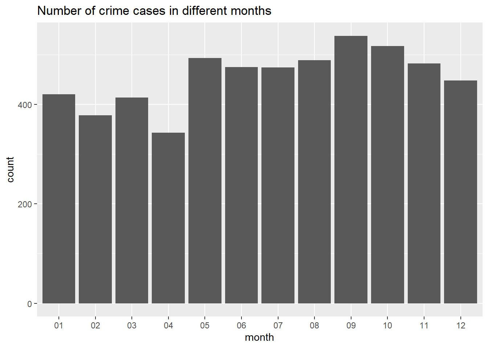

Chapter 4 Results
4.1 Is Ann Arbor a relatively dangerous city in Michigan?
For the purpose of comparison with Ann Arbor, we care more about the public safety situation of big cities in Michigan.
Among the 20 cities with highest population, Detroit is the only outlier. We would like to explore in another way that if Ann Arbor has a higher crime rate.
Obviously, in terms of whichever, property crime rate or violent crime rate, the value of Ann Arbor is near the middle of the data.
The two graphs above indicate that Ann Arbor is not an obviously dangerous (with large number or higher rate of crimes) city in Michigan.
4.2 What type of crimes happen the most?
As we can tell from the plot, property crime in Ann Arbor is much more common than violent crime. In 2019, the FBI reported a total of 2124 property crimes, compared with 309 violent crimes.
The most common type of property crime in 2019 was larceny theft, followed by burglary and motor vehicle theft. Among violent crimes, aggravated assault was the most common type, followed by robbery, rape, and murder.
The above plot used the data collected by FBI, and as a result, although the cases are clearly clarified into two main categories, but it does not include all detailed types of crimes. Let’s see a more detailed version, whose data is collected by local police department in Ann Arbor.
It can be told that the types of crimes that have the most counts during the past 366 days are Larceny, Assault and FRAUD. In particular, Larceny has 1628 cases in total, Assault has 787 cases in total, and FRAUD has 533 cases in total. You should really be careful about your own items in Ann Arbor.
4.3 Which month does the crime cases happen the most frequently?
We can first see the distribution of the number of crime incidents for the whole year in the following barplot.

Both the barplot and the time series plot summarize the monthly number of crime cases in a chronological order. The time series plot gives a clearer and more straight-forward view of the change of numbers among different months. It can be told from the graph that September, October, and May have the most cases compared to any other month of year 2022. Number of cases reache the lowest in April. From the overview of the whole year, the frequency of cases in the second half of the year is more than that in the first half of the year.
4.4 What day do the crime cases happen the most often?
We specifically take a look at the following three months that have the most cases of crimes for analysis: May, September, and October.
According to time series plot:
in May, 05/01, 05/07, 05/10, 05/13, 05/19, 05/22, 05/25 have a relatively high occurrence of cases.
in September, we can see the cases is relatively high on 09/04, 09/11, 09/17, 09/24, and 09/29, which reach the highest on 09/17.
in October, we can see the cases is extremely high on 10/30, comparing to any other days in that month. 10/06, 10/09, 10/15, 10/22 have a relatively high occurrence of cases.
When comparing the cases peeks among all the dates, we find that there is no fixed pattern for daily number of occurrence of crime cases. Although the highest number of occurrence among a month are not always on weekends, we notice that crimes occur relatively more frequently on weekends especially on Sunday.
4.5 In what time of a day do the cases happen more often?
4.5.1 Time Series Plot among 24 hours of a day
## # A tibble: 24 × 2
## hour count
## <chr> <int>
## 1 00 362
## 2 01 294
## 3 02 351
## 4 03 271
## 5 04 171
## 6 05 127
## 7 06 98
## 8 07 88
## 9 08 135
## 10 09 182
## # … with 14 more rowsFrom the data of the past 366 days, we summarized the total number of cases at each hour during a day. It can be told from the graph that the typical hours that have the most crime cases are 12am, 12pm, 1am and 2am. The reasons behind would be that during late time at night, there are fewer people outside, thus it is more convenient for crimes to occur as there are fewer witnesses and people who can help and stop crimes.
It is also noticeable that from 1pm to 7pm, cases are relatively fewer than those at peek times, but still are quite high.
4.6 In which part of the city do the cases happen more often?
4.6.1 heatmap for different locations (x, y coordiantes)
max(crime$POINT_X)## [1] -83.01426min(crime$POINT_X)## [1] -84.39088max(crime$POINT_Y)## [1] 42.39456min(crime$POINT_Y)## [1] 42.1513consider point_x : -83 ~ -84.4 -84.4 ~ -84.12; -84.12 ~ -83.84; -83.84 ~ -83.56; -83.56 ~ -83.28; -83.28 ~ -83;
consider point_y: 42.15 ~ 42.40 42.15 ~ 42.2; 42.2 ~ 42.25; 42.25 ~ 42.3; 42.3 ~ 42.35; 42.35 ~ 42.4;
Comments: We set the ranges of point x and point y into 5 pieces each, and then calculated the total cases among each district. The shade of the blue from brightest to darkeet represents the variation of number of cases from high to low. It can be told from the graph that the areas with most crime cases are as follows: 42.25° N ~ 42.3° N, 83.56° W, 83.84° W. In those areas, the total number of cases during the past 366 days is 5451.
4.7 Is public security in Ann Arbor getting better during these years?
During the past 10 years between 2010 and 2019, Violent crime number and rate in Ann Arbor has an increasing trend while Property crime number and rate has a decreasing trend. Clearly, public safety does not change a lot in the past 10 years.